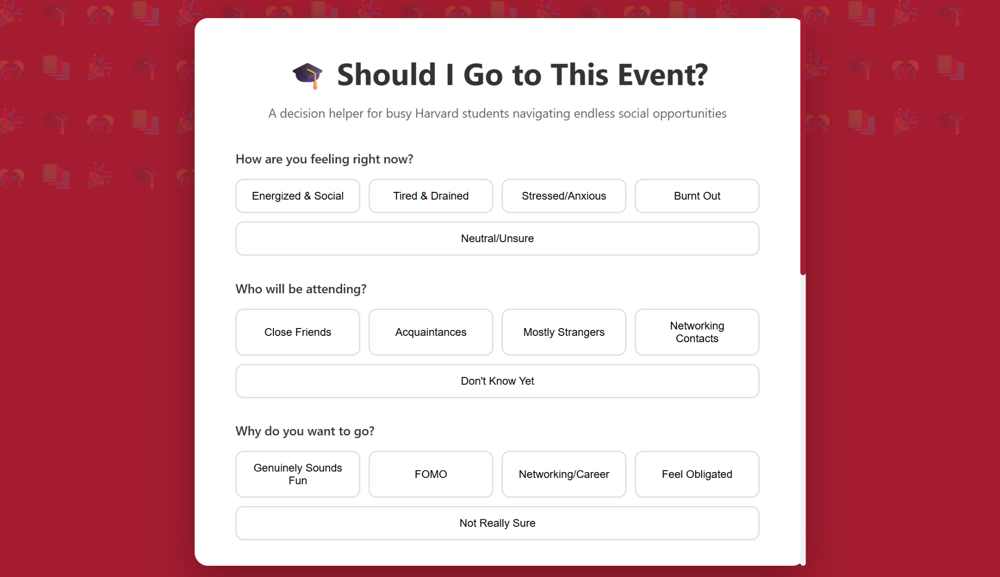
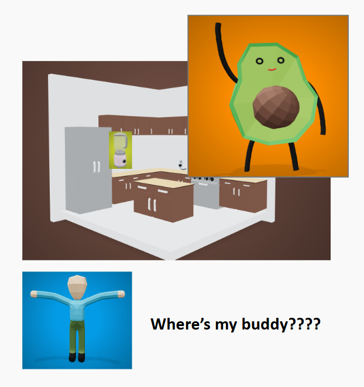
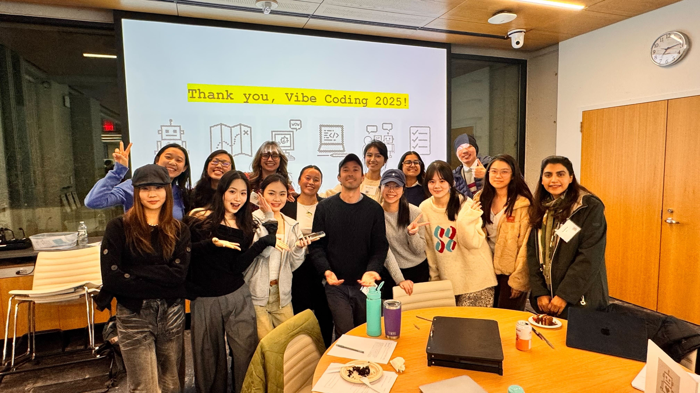

My Position
I have mixed feelings about creating with AI.
1) The Magic of AI Partnership
Working with an AI partner is a nearly magical experience, much like the elephant toothpaste chemical reaction I showed in my Canva video. Starting with just a few simple "ingredients," I can transform initial thoughts into tangible work in a blink (though usually, it takes a little longer) by using a series of initial, but continually refining, prompts.
Learn more about The Paradox of Predictability
2) It can get MESSY
However, just as the chemical reaction's "toothpaste" can be unpredictable or undesirable, the AI's output depends on various factors: the precision of your prompts, the sophistication of your core idea, the model you're using and its training data, and your patience when the AI struggles to interpret your input... Things can turn out massively different than what we expected and may change our thoughts and motivation during the process too.
The Paradox of Predictability
A central dynamic of vibe coding is the question of predictability. When I started working with AI, its novelty meant my initial sense of predictability was low—I simply didn't know the full extent of its capabilities.
I initially presumed that as I became more familiar with these tools, my uncertainty about their intelligence would decrease. However, as I compose this portfolio, I remain astonished by their ability to understand and generate content based on implied meaning—messages that seem to be "hidden between the lines" and that share much with human intuition.
For instance, I asked Claude to make a photograph interactive. While I was thinking of flashing hotspots on different parts of the image without explicitly stating that in my prompt, the AI nonetheless executed the exact same concept, successfully visualizing my unspoken intent.
A Threat to My Imagination
A threat lies in the homogeneity of content generated by AI, which ultimately constrains my imagination when designing a website. Tools like Claude and Replit often supply default fonts and backgrounds that continually reappear. This inherent reliance on standardized elements means I sometimes struggle to start a design entirely from scratch to achieve my own unique vision.
Authors of art and the science of generative AI agree with me on the homogeneity of AI-generated content and discussed its impact on culture and aesthetics:
"AI-generated content may also feed future generative models, creating a self-referential aesthetic flywheel that could perpetuate AI-driven cultural norms. This flywheel may in turn reinforce generative AI's aesthetics, as well as the biases these models exhibit." (p. 3, Epstein et al.)
Moments with AI
Throughout my journey with AI, I've experienced both incredible breakthroughs and frustrating setbacks, shaping my mixed thoughts on AI and also making me realize how complicated human communication is. Here are some memorable moments:
✨ Moments of Amazement
I did several projects where I find AI a fantastic tool in completing the strategizing/computing part of my design.

I had an idea of what I want to make a decision-aid tool through asking people's condition and needs. AI automatically generates a mechanism for recommending actions: go or not go. I felt relaxed because I didn't have to build a decision tree myself, and the recomanded actions make sense 90% of the time.
Working with Figma Mix was a great experience for me because I can get a lot of inspiration from the community. It was also Chinese-friendly, so I was able to both prompt and get the product in Chinese.
In my project, I used the "Fortune Cookie Model" to build a randome message distrubting tool. Thanks to AI, I was able to embed a secret golden leaf with a "HAPPY BIRTHDAY" meesage on it falling from the sky to surprise my mom. AI helped me to randomize other falling leaf so the golden one is more salient. AI also did a great job adding visual effects automatically to make the project look better. With its help, I had more time in class to add sound effect and other hidden messages for my mom.
I was so proud to send my mom a vibe coded birthday gift.
❌ Moments of Failure
Epic failure of creating a 3D game using multiple sources. I felt confident before using Claude because I created the game rules, collected models for the scene and characters, and design a flowchart to make sure I can integrate sepearate sources. However, my prompt was way too long due to my ambition. And I didn't do enough research on how to integrate different 3D models specifically. The preview of my "GAME" was a guy that can never actually show up and a kitchen counter that is way smaller than the avocado

AI partnership
I sometimes find AI a great creative partner.

AI randomly putting the microphone above the avocado inspired me to make a "grab a mic" game! This is when I feel it shares the creative responsibility with me and create with me nearly equally.
- AI-Powered Development
- Real-time Collaboration
- #AIismybestfriendforclass JK
📚 AI as an Integrated Learning Partner
One of the most valuable lessons I learned—thanks to our beloved TF, Dhyan—is that the resources needed for a project can often be accessed simply by asking the AI.
In my previous learning and creating experiences, developing a project required manually navigating multiple sources: finding a template on Canva, synthesizing content from textbooks and notebooks, and consulting instructors for material integration. Now, AI functions as a Pandora's box of knowledge, acting as a subject matter expert in nearly every domain.
This shift began when I encountered coding bugs. My initial reaction was to ask Dhyan for help; his simple advice, "tell Claude to debug itself," completely changed my workflow. From that experience, I realized the power of learning with AI whenever a need arises. Similarly, when I needed to publish my website, I learned to bypass asking others and instead turned directly to Claude. Now, whenever an error or issue emerges, my first step is to consult Claude, which has been instrumental in successfully executing my projects.
Evidence from the readings
Explore insights from academic readings that inform my position on AI and creativity:
Empire of AI
In Empire of AI, the author posed the Threat of Language Loss due to LLMs.
"Large language models accelerate language loss. Even for models several generations earlier like GPT-2, there are only a few languages in the world that are spoken by enough people and documented online at sufficient scale to fulfill the data imperative of these models. Among the over seven thousand languages that still exist today, almost half are endangered according to UNESCO; about a third have some online presence; less than 2 percent are supported by Google Translate; and according to OpenAI's own testing, only fifteen, or 0.2 percent, are supported by GPT-4 above an 80 percent accuracy. As these models become digital infrastructure, the internet's accessibility to different language communities—and the accessibility of the economic opportunities it provides—will continue to shrink, incentivizing more and more of those communities to prioritize learning and speaking a dominant language like English over their own." (Hao, p. 410)
🗣️ Linguistic Barriers and Creative Disempowerment
My experience creating with AI is marked by a tension between my creative vision and the tools' linguistic requirements. As a non-native English speaker, I often feel less empowered, incompatible, and even inferior when collaborating with AI, or when comparing my output to that of my English-speaking counterparts.
I can articulate my creative intent with poetic fluency in Chinese, but translating those nuanced visions into the procedural English terms required by Large Language Models (LLMs) demands significantly more effort. This feeling of being disempowered and incompatible is directly related to how LLMs are constructed and the linguistic systems they prioritize.
🌐 The Systemic Challenge of Linguistic Dominance
My struggle highlights a significant and well-documented challenge arising from the current development paradigm of generative AI: the issue of linguistic dominance and the data required to train these powerful models.
The vast majority of current generative AI is built on a "data imperative" that primarily centers dominant languages like English. This focus often leads to the marginalization and disempowerment of creators who express themselves in other rich linguistic traditions, such as Chinese. Consequently, my own rich linguistic tradition is not fully leveraged, creating a gap between my expressive capacity and the AI's understanding.
Bacteria to AI: Human Futures with Our Nonhuman Symbionts
Exploring the concept of man-computer symbiosis and its implications for our future.
"The larva of the fig insect lives in the ovary of the fig tree, and there it gets its food. The tree and the fig insect are thus heavily interdependent: the tree cannot reproduce without the insect; the insect cannot eat without the tree; together, they constitute not only a viable but a productive and thriving partnership. This cooperative 'living together in intimate association, or even close union, of two dissimilar organisms' is called symbiosis.
Man-computer symbiosis is a subclass of man-machine systems." (p.4, Licklider)
💻 Ambivalence Toward Man-Computer Symbiosis
I naturally feel reluctant and even uncomfortable with the argument for man-computer symbiosis because the intimate and potentially inseparable association between humans and computers feels too real. This symbiosis indicates that humans can't thrive or even just survive without AI, creating a sense of hopelessness. However, this symbiosis once predicted for the distant future when the original text was written, is now a reality. We are currently experiencing AI creating content and images that seem to be beyond what a human could ever conceive in a short period time. Jobs are replaced by AI agents, and people are being urged to control and master AI tools at all ages. It seems too real.
However, the latter part of the article—which describes distinct roles where humans are the decision-makers and computers handle routinized tasks—temporarily relieves my apprehension about AI taking over human work. This statement explicates the ultimate ideal goal for working with AI: achieving a supported and seamless workflow where individuals benefit from monitoring and guidance tailored to their specific behaviors and intelligence. Crucially, this collaboration must be designed to actively avoid systemic bias and maintain full transparency regarding the AI models' limitations.
This ambivalent and conflicting view urges me to deeply research, study, and understand the full scope of what AI is and what it can be in my foreseeable future.
Thank you Vibe Coding Teaching Team
It was trully a transformative learning journey for me.
- 💖 Thank you Karen
- 💙 Thank you Jacob
- 💜 Thank you Dyhan and other TFs
- 💚 #GoodVibesOnly
Creating with human partners
I use AI to bring my thoughts to life, but being with creative peers in class has been truly transformative for me. They constantly model creativity and push me to think outside the box, to find the "unicorn," or to genuinely deepen my understanding and broaden my view on subjects I thought I already knew.
In our first class, a girl showed me her anti-domestic violence project built merely on text and souds. It was shocking to me. I was so impressed. That was a life-changing moment. I have never thought how plain text on a screen could be so powerful
Although I sometimes find that certain algorithms or systems do not work optimally for me, I am genuinely happy to see them succeed for others. The beautiful work created by my peers is a constant source of inspiration and joy.

- Human Intelligence
- Knowledge Sharing
- Peer Learning